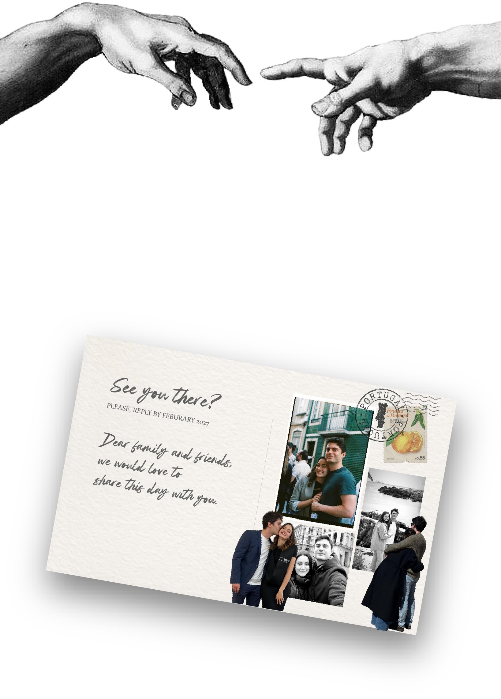
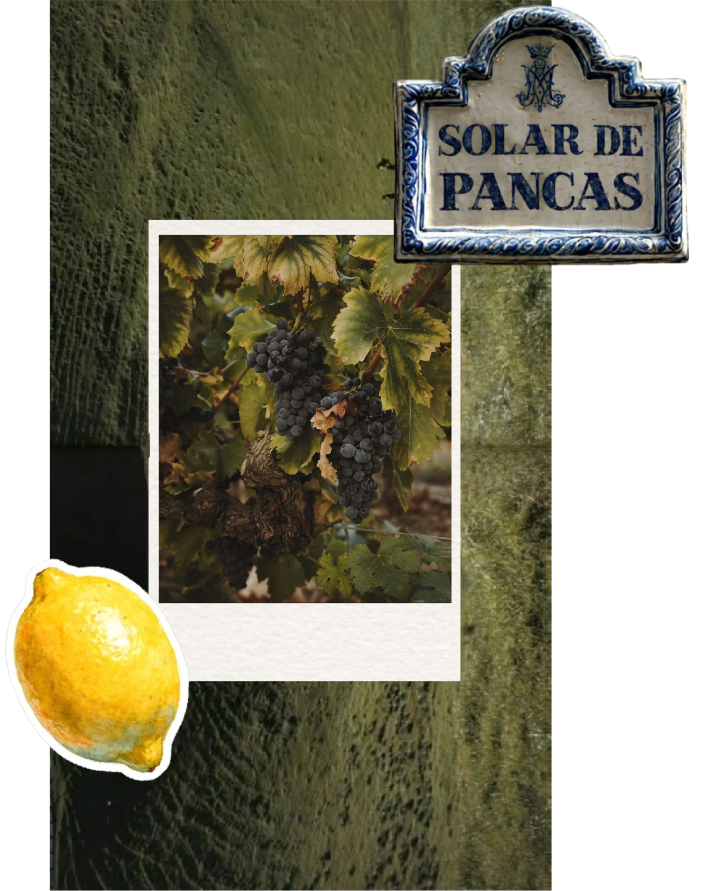
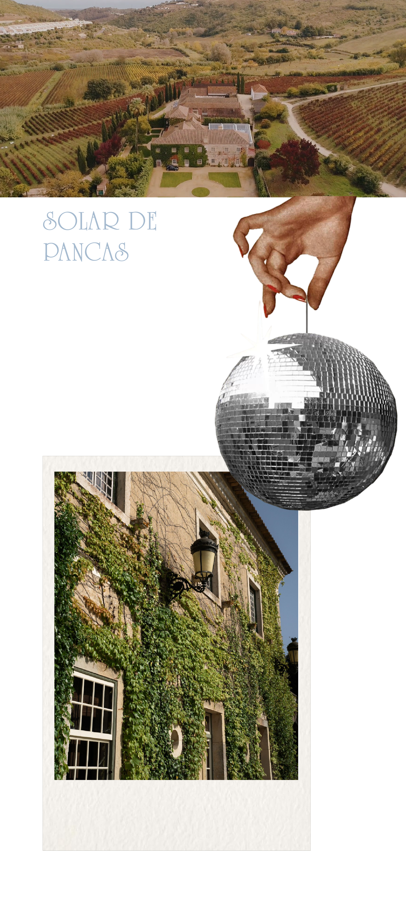

Portugal, once a gateway to the New World, became ours - the place where two explorers, having left their homelands, unexpectedly found each other.
One path leading from sunny, dynamic and vibrant Brazil. The other, from the seasonal, quiet and understated Latvia. Our contrasts turned complementary, tastes aligned, incomprehensible references got created and neurons merged, leading us to delve into the inevitable next phase of our lives. A phase we wish to share with all we hold dear.
Portugal, outrora porta de entrada para o Novo Mundo, tornou-se nosso – o lugar onde dois exploradores, tendo deixado as suas terras natais, se encontraram inesperadamente.
Um caminho partindo do ensolarado, dinâmico e vibrante Brasil. O outro, da Letónia, sazonal, tranquila e discreta. Os nossos contrastes complementaram-se, os gostos alinharam-se, referências incompreensíveis foram criadas e neurónios fundiram-se, levando-nos a mergulhar na inevitável fase seguinte das nossas vidas. Uma fase que desejamos partilhar com todos aqueles que amamos.


Located in the Oeste wine region about 40 minutes from Lisbon, is a historic town shaped by its Arab and medieval heritage, built on the slopes of the Alenquer River valley.

Solar de Pancas, located in Alenquer, was founded in 1498. It is a historic manor house, surrounded by vineyards, characterized by its traditional architecture and strong connection to the region's wine production.